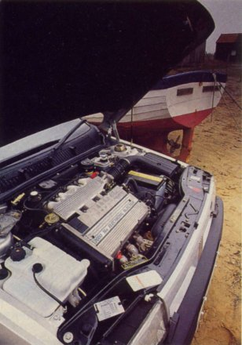
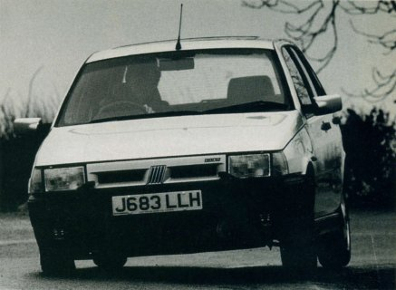
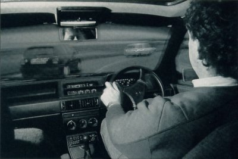
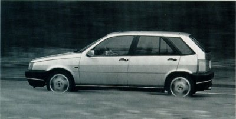
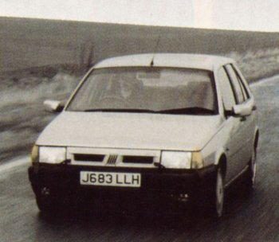

Having invented the GTi with the Golf back in the 1970s, VW ruled the class for a decade. The Golf remained the definitive fast hatch until the late 1980s when `imitators’ stopped flattering and started making the running. Now the third generation GTi is here and its task is not simply to better the Mk2 but re-establish VW as the leader of the pack. To succeed it will have to despatch the superb Fiat Tipo 16V, a formidable adversary that fought and won the fast hatch crown in our recent eight-hatch test (PC, February 1992).
Intent on doing the same is the new Nissan Sunny GTi, which looks just like its capable and stimulating rally-bred sister, the turbocharged 4wd GTi-R. Power isn’t all, but the Nissan seems better equipped than the VW to overthrow the 148bhp Fiat. It’s true that Tipo’s closest rivals in our recent test were the least powerful, but none had less than 130bhp. The Nissan weighs in with 143bhp from its normally aspirated 2-litre twin-cam but the Golf gives just 115bhp from its eight-valve 2-litre.
If you’re thinking that the 16-valve Golf would be a better choice we’d agree, but that model is still some months away and, anyhow, the 8V is a direct competitor on price: the five-door here costs £14,426 (the three-door is exactly £14,000), compared with £13,949 for the Tipo and £14,950 for the Sunny.
The third generation Golf continues the evolutionary theme set by the Mk2, using developments of the running gear and chassis of its predecessor and becoming more rounded, bigger and heavier. Photographs don’t do it justice; on the move, light and shade playing on its subtle lines, it looks like a saloon version of the Corrado coupe. By comparison, the Sunny, which shares a very similar rear end, looks unfinished, a less refined design. But, boy, does it move.
At the track the Nissan proved itself the quickest of fast hatches, catapulting to 60mph in just 7.2 seconds and on to the more representative quarter-mile in a class-leading 15.6 seconds. The Golf falls the wrong side of the times set by the Tipo which, recording 7.9 and 16.3 seconds for the same disciplines, is a mid to low field runner in the class. The Golf does no better than 9.7 and 17.5 seconds, times that a Rover Metro GTi can beat.
The Golf’s lack of muscle is evident in the top speed and flexibility tests, too. Flat out, the VW recorded 117mph, 10mph down on the Fiat and a division down on the 130mph Nissan. In the all-important in-gear tests, which indicate overtaking ability, the Golf is similarly lacklustre; 30-50mph in fourth takes 8.3 seconds, a second longer than the Tipo and a full two seconds longer than the storming Sunny. It’s the same story in fifth, the Sunny despatching the 50-70mph increment in 9.3 seconds, ahead of the Tipo on 10.1 (whose time is amongst the slowest in the class), with the Golf some way behind on 11.9.
|
 |
| Tipo's smooth, powerful and vocal 16-valver oozes character. |
The VW’s gearing doesn’t help its cause, there being a large jump in the ratios between second and third. On a sinuous B road, second is often too low and third too high. It’s an error that the other makers have avoided, though the Fiat’s bulk and slightly peaky power delivery allow the lighter Nissan to stretch out a lead when a series of corners demands instant response.
In terms of shift quality all three cars gearboxes are positive but none is perfect. The VW’s much modified change action is lighter, less bumpy but a little loose, and is occasionally reluctant to slot into second in a hurry. The Nissan’s is tighter and crisper but finding fifth can be troublesome, while the Fiat’s is similarly awkward at times, although it’s allied to easily the best weighted, most positive clutch action.
There’s no pay-off at the fuel pumps for the poor-performing Golf, the Tipo just pipping it with 27.3mpg (Golf 27.2, Sunny 26.4). All three cars are catalyst equipped.
What made the Golf GTi such a delight in previous incarnations was the unflappable poise and precision of its chassis. The Mk3 ought to be even better, its familiar suspension set-up of MacPherson struts, wishbones and anti-roll bar at the front and struts, torsion beam and anti- roll bar at the rear benefiting from the passive rear-steer suspension bushing of the Passat and Corrado. These bushes allow the rear axle to shift slightly under cornering loads, pointing the rear wheels in the same direction as the fronts for greater stability and neater cornering.
|
|
The Tipo feels like the Golf ought to: firmly sprung and superbly damped, decisive yet very
progressive. Perhaps the Golf would feel like this if it were fitted with the optional ‘Plus’
suspension pack. Quite why VW is marketing a sports handling kit for its GTi is curious in
itself, but it seems it might address most of our criticisms, promising firmer, more direct
steering, ‘matched spring damper rates’ and gas-filled dampers at the rear.
|
 |
| Tipo's fine handling show up deficiencies of the other two. |
The Golf, Sunny and Tipo share similar braking systems with ventilated discs at the front,
solid discs astern, and all work superbly through well-weighted, progressive pedals.
However, the Nissan justifies its higher basic price by having antilock as standard.
|
 |
| Tipo's excellent optional Recaro seats give superb support. |
GTi pointers are few in all three, the Tipo being most up-front with its drilled metal throttle pedal, red-banded Momo leather steering wheel and extensive range of gauges with red needles. The Sunny has a chunky, height-adjustable leather-trimmed wheel, too, but the Golf makes do with an ordinary-looking and fixed three-spoke affair.
Although the Tipo’s church-pew driving position feels a little odd at first, it works as well as
any once you’re used to it, the excellent (optional) Recaro seats keeping the driver firmly in
place. More tuning opportunities are offered to the Sunny driver, the cushion of its more
subtle sports seats offering fore and aft height adjustment, but the Golf’s firm seats, and the
Tipo’s, are slightly more supportive.
|
 |
| Tipo's styling is a little unhappy, but interior space good. |
Although the Tipos characterful engine is encouragingly vocal when extended, at a cruise it is remarkably quiet. This, combined with very low levels of wind and road noise and an almost total absence of bump-thump, gives the Fiat a decisive win in the refinement stakes. In the Golf, wind noise is much more noticeable and, as in the Sunny, tyre roar filters through to the occupants.
You’ll have guessed by now that neither Golf nor Sunny has the talent to oust the Tipo from its throne. The Sunny is quick enough and well built but it leaves no lasting impression, save for the consistent and strong delivery of its twin-cam engine. This feels every bit as lusty and responsive as the venerable Vauxhall 2-litre 16-valver, but like the Astra GSi, though to a lessor degree, the Sunny’s chassis fails to exploit this asset.
More disappointing is the Mk3 Golf’s performance. If it were badged as a 2.0 GL, it would
all add up: the ordinary performance, the consistent but hardly sparkling power delivery, and
the agreeable but slightly woolly handling. As a GTi, and one from the company that
invented the genre, the latest Golf simply doesn’t convince. It’s certainly stylish, inside and
out, even though those fog and driving lamps set into the front apron are just blanks.
|
 |
|
PERFORMANCE |
|||
| Fiat Tipo 16V | Nissan Sunny 2.0 | Volkswagen Golf GTi | |
| THROUGH THE GEARS (SECS) | |||
| 0-30mph | 3.0 | 2.9 | 3.3 |
| 0-40mph | 4.0 | 4.1 | 5.1 |
| 0-50mph | 5.9 | 5.5 | 7.2 |
| 0-60mph | 7.9 | 7.2 | 9.7 |
| 0-70mph | 10.2 | 9.4 | 13.2 |
| 0-80mph | 13.4 | 12.2 | 17.9 |
| 0-90mph | 17.4 | 15.4 | 23.9 |
| 0-100mph | 22.2 | 20.2 | 32.3 |
| 0-110mph | - | 26.9 | - |
| Standing 1/4mile (sec/mph) | 16.3/87 | 15.6/91 | 17.5/80 |
| Averaged top speed (mph) | 127 | 130 | 117 |
| 4th GEAR ACCELERATION | |||
| 30-50mph | 7.3 | 6.3 | 8.3 |
| 40-60mph | 7.7 | 6.3 | 8.2 |
| 60-70mph | 7.5 | 6.3 | 8.5 |
| 60-80mph | 7.4 | 6.3 | 9.3 |
| 70-90mph | 7.8 | 6.6 | 11.5 |
| 80-100mph | 8.5 | 7.9 | 14.9 |
| 90-110mph | - | 11.0 | - |
| 5th GEAR ACCELERATION | |||
| 30-50mph | 10.1 | 8.9 | 11.0 |
| 40-60mph | 9.8 | 9.1 | 10.8 |
| 50-70mph | 10.1 | 9.3 | 11.9 |
| 60-80mph | 11.5 | 10.1 | 12.9 |
| 70-90mph | 11.8 | 11.0 | 15.3 |
| 80-100mph | 12.7 | 12.2 | - |
| Overall fuel cons (mpg) | 23.9 | 26.4 | 27.2 |
| Touring mpg(from Govt figs) | 28.3 | 32.1 | 33.9 |
| Track conditions | Damp | Dry | Dry |
| Temperature (C) | 11 | 7 | 7 |
| Wind speed (mph) | 10 | 16 | 16 |
| Atmospheric pressure (mbar) | 1011 | 750 | 750 |
| SPECIFICATION | Fiat Tipo 16V | Nissan Sunny GTI | VW Golf GTI Mk3 | ||||||||||||||||||||||||||||||||||||
| ENGINE | Four-cylinder, in-line, transverse | Four-cylinder, in-line, transverse | Four-cylinder, in-line, transverse | ||||||||||||||||||||||||||||||||||||
| DISPLACEMENT | 1995cc | 1998cc | 1984cc | ||||||||||||||||||||||||||||||||||||
| BORE x STROKE | 84.0mm x 90.0mm | 86.0mm x 86.0mm | 82.5mm x 92.8mm | ||||||||||||||||||||||||||||||||||||
| RATIO | 10.5 to 1 | 10.0 to 1 | 10.4 to 1 | ||||||||||||||||||||||||||||||||||||
| FUEL AND IGNITION | Electronic multipoint fuel injection and ignition | Electronic multi-point fuel injection and ignition | Digifant multipoint fuel injection, electronic ignition | ||||||||||||||||||||||||||||||||||||
| CYLINDER BLOCK | Cast iron | Aluminium alloy | Cast iron | ||||||||||||||||||||||||||||||||||||
| CYLINDER HEAD | Aluminium alloy, dohc, four valves per cylinder | Aluminium alloy, dohc, four valves per cylinder | Aluminium alloy, sohc, two valves per cylinder | ||||||||||||||||||||||||||||||||||||
| MAX POWER (DIN) | 148bhp @6250rpm | 141bhp @6400rpm | 115bhp @5400rpm | ||||||||||||||||||||||||||||||||||||
| MAX TORQUE (DIN) | 131lb ft @5000rpm | 109lb ft @4800rpm | 122lb ft @3200rpm | ||||||||||||||||||||||||||||||||||||
| GEARBOX | Five-speed manual | Five-speed manual | Five-speed manual | ||||||||||||||||||||||||||||||||||||
|
GEAR RATIOS |
|
|
|
||||||||||||||||||||||||||||||||||||
|
FINAL DRIVE RATIO |
3.562 to 1 19.8mph |
4.18 to 1 n/a |
3.67 to 1 22.1 mph |
||||||||||||||||||||||||||||||||||||
| FRONT SUSPENSION | Independent by MacPherson struts, lower wishbones, coil springs and anti-roll bar | Independent by MacPherson struts, coil springs, transverse links and anti-roll bar | Independent by MacPherson stiuts, lower wishbones, coil springs and anti-roll bar | ||||||||||||||||||||||||||||||||||||
| REAR SUSPENSION | Independent by struts, trailing arms and anti-roll bar | Independent by struts, coil springs with parallel links and anti-roll bar | Independent by struts, torsion beam, trailing arms, anti-roll bar | ||||||||||||||||||||||||||||||||||||
|
STEERING |
Rack and pinion, power assisted | Rack and pinion, power assisted | Rack and pinion, power assisted | ||||||||||||||||||||||||||||||||||||
| BRAKES | Front vented discs, rear discs |
Front vented discs, rear discs. Anti-lock |
Front vented discs, rear discs. Anti-lock optional |
||||||||||||||||||||||||||||||||||||
| WHEELS |
6J x 15in cast alloy |
6J x l4in alloy |
6J x 15in alloy |
||||||||||||||||||||||||||||||||||||
| TYRES |
185/55 VR15 Pirelli P600 |
195/55 VR14 Bridgestone |
195/50 VR15 Continental |
||||||||||||||||||||||||||||||||||||
| WHEELBASE | 99.9in | 95.7in | 97.5in | ||||||||||||||||||||||||||||||||||||
| TURNING CIRCLE | 33.8ft | 34.lft | 36.1ft | ||||||||||||||||||||||||||||||||||||
| FUEL TANK CAPACITY | 12.1 gal/55 litres |
11 gal/50 litres |
12.1 gal/55 litres | ||||||||||||||||||||||||||||||||||||
| UNLADEN WEIGHT | 2767lb | 2159lb | 2203lb | ||||||||||||||||||||||||||||||||||||
| TEST WEIGHT | 3097lb | 2489lb | 2533lb | ||||||||||||||||||||||||||||||||||||
| POWER TO WEIGHT RATIO (TEST WEIGHT) | 107bhp/ton | 127bhp/ton | 102bhp/ton | ||||||||||||||||||||||||||||||||||||
| BASIC PRICE | £13,949 | £14,950 | £14,426 | ||||||||||||||||||||||||||||||||||||
| PRICE AS TESTED | £15,492 | £14,950 | £n/a | ||||||||||||||||||||||||||||||||||||
| OPTIONAL EXTRAS FITTED TO TEST CAR | Anti-lock brakes £948, Recaro front seats £595 | None | Electric sunroof £n/a |